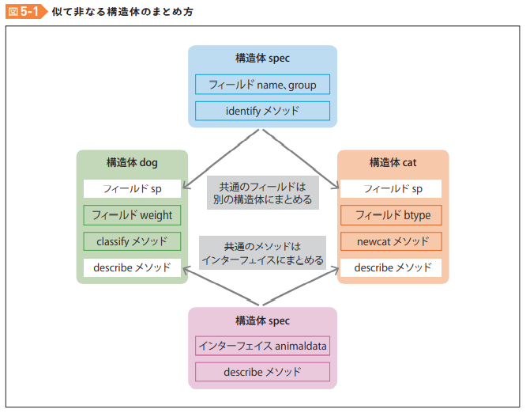

たった1日で基本が身に付く！ Go言語 超入門：書籍案内｜技術評論社
CHAPTER 5 複雑なデータ構造を記述する構造体
- 構造体(struct)はデータ型
構造体の定義
type 構造体名 struct {
name string
group string
height int
}
- 構造体名は、このファイルの中のみで使う場合は小文字で始める
- 他のファイルからも読み込むようにする場合は大文字で始める
- 構造体の中では、属性を指定できる。Goでは属性をフィールドと呼ぶ
構造体からインスタンスを生成する
pome := dog{"ポメ", "ポメラニアン", 25}
インスタンスからフィールドを取り出す
pome.name
構造体のインスタンスを関数の引数に取る
func bigger(d1 dog, d2 dog) string {
// 処理
}
// 呼び出し
pome := dog{"ポメ", "ポメラニアン", 25}
maru := dog{"マル", "マルチーズ", 22}
bigger(pome, maru)
- 関数側では引数のデータ型を構造体名のdogにする
- 呼び出し側では、構造体のインスタンスをいれるだけ。
構造体のインスタンスを戻り値とする関数
func biggest(dogs []dog) dog {
biggest := dogs[0]
// 処理
return biggest
}
- 関数の戻り値にも使える
構造体にメソッドを持たせる
// 通常のメソッド
func describe(引数 引数のデータ型) 戻り値のデータ型 {
// 処理
}
- funcのあとにレシーバーを書くところが通常のメソッドとの違い
// 構造体のインスタンスのメソッド
func (構造体のインスタンス名(レシーバー) 構造体のデータ型) describe(引数 引数のデータ型) 戻り値のデータ型 {
// 処理
}
- 練習でダイとポップが必殺技を使うメソッドを作った
package main
import "fmt"
// 勇者の構造体を定義
type yuusya struct {
name string
profession string
deathblow string
}
// 魔法使いの構造体を定義
type wizard struct {
name string
profession string
deathblow string
}
// 勇者の構造体のインスタンスメソッドを定義
func (y yuusya) hissatsu() string {
dscr := y.profession + y.name + "は必殺技" + y.deathblow + "を使った"
return dscr
}
// 魔法使いの構造体のインスタンスメソッドを定義
func (w wizard) hissatsu() string {
dscr := w.profession + w.name + "は必殺技" + w.deathblow + "を使った"
return dscr
}
func main() {
dai := yuusya{"ダイ", "勇者", "アバンストラッシュ"}
pop := wizard{"ポップ", "魔法使い", "メドローア"}
fmt.Println(dai.hissatsu())
fmt.Println(pop.hissatsu())
}
=> 勇者ダイは必殺技アバンストラッシュを使った
魔法使いポップは必殺技メドローアを使った
引数を取るメソッド
package main
import "fmt"
// 勇者の構造体を定義
type yuusya struct {
name string
profession string
deathblow string
power int // ← 追加
}
// 魔法使いの構造体を定義
type wizard struct {
name string
profession string
deathblow string
power int // ← 追加
}
// 勇者の構造体のインスタンスメソッドを定義
func (y yuusya) hissatsu() string {
dscr := y.profession + y.name + "は必殺技" + y.deathblow + "を使った"
return dscr
}
// 魔法使いの構造体のインスタンスメソッドを定義
func (w wizard) hissatsu() string {
dscr := w.profession + w.name + "は必殺技" + w.deathblow + "を使った"
return dscr
}
func (y yuusya) strong(w wizard) string { // ← 追加
dscr := ""
switch {
case y.power > w.power:
dscr = y.name + "のほうが強い"
case y.power < w.power:
dscr = w.name + "のほうが強い"
case y.power == w.power:
dscr = y.name + "と" + w.name + "は同じくらいの強さ"
default:
}
return dscr
}
func main() {
dai := yuusya{"ダイ", "勇者", "アバンストラッシュ", 10000}
pop := wizard{"ポップ", "魔法使い", "メドローア", 10}
fmt.Println(dai.hissatsu())
fmt.Println(pop.hissatsu())
fmt.Println(dai.strong(pop)) // ← 追加
}
初期化メソッド
- initializeメソッドのようなものがあるわけではなく通常のメソッドを使っている模様だ。
// 毎回このように値を入力するのは大変
dai := yuusya{"ダイ", "勇者", "アバンストラッシュ", 10000}
// 初期化メソッドを定義する
// 戻り値はyuusyaインスタンス
func newyuusya(name string) yuusya {
return yuusya{name, "勇者", "アバンストラッシュ", 10000}
}
// このように使う
dai := newyuusya("ダイ")
呼んだインスタンスのコピーを戻す
- レシーバーを受け取って、高さと重さを書き換えてそのままレシーバーを返しているように見えるが、実はインスタンスのコピーを返しているとのこと。
func (pat patient) bodys(height int, weight int) patient {
pat.height = height
pat.weight = weight
return pat
}
メソッドチェーン
- このようにメソッドを繋げて書ける。
hm := newpatient("HM").bodys(165, 70).bloodp(120,80)
インターフェイスとは
- インターフェースとは、メソッドのシグネチャの集まりに名前を付けたものである。
シグネチャとは
- シグネチャとは、関数やメソッドの名前、引数の数やデータ型、返り値の型などの組み合わせのこと
インターフェイスの定義方法
type input interface {
read() string
}
- シグネチャを持つメソッドの名前を定義するだけ
インターフェイスのメリット
- 構造体が違っても、同名のメソッドを持っていれば、各インスタンスをまとめて扱える。
// インターフェイスを定義
// 同じシグネチャを持つメソッドをまとめる
type input interface { read() string }
// 構造体を定義
type keyboard struct{}
type file struct{}
type mic struct{}
type sensor struct{}
// インスタンスメソッドを定義
// それぞれの構造体が同じシグネチャ(メソッド名同じ、引数なし、戻り値は文字列が１つ)のメソッドを持つ
// 同じシグネチャの4つのメソッド
func (k keyboard) read() string { return "何かキーを押してください" }
func (f file) read() string { return "ファイルパスを指定してください" }
func (m mic) read() string { return "ボタンを押して話してください" }
func (s sensor) read() string { return "計測を開始してください" }
// 配列を定義
// 要素の型はinput
methods := []input{keyboard{}, file{}, mic{}, sensor{}}
- 配列の要素は同じデータ型でないといけない。
- 上記の配列をみると、それぞれ違う構造体なので本来ならNGのはず。
- しかし、これらを抽象化するインターフェイスinputのデータ型として同じ配列における。
- なぜ4つの違う構造体がinputのデータ型ともいえるのか？
- inputでは同じシグネチャを持つメソッド名だけ定義してある
- インターフェイスで定義できるのはメソッドのみで、フィールドは定義できない
より複雑な構造体とインターフェイス
- この例を見て、インターフェイスは構造体をより抽象化して同じものとみなすために使うのかな？というイメージでいる
- で、違う構造体同士を抽象化するためには同じシグネチャのメソッドが必要みたいなイメージだなー。たぶんあってないと思うけど。
package main
import (
"fmt"
)
// ⑦ dogとcatでは構造体が違うが、同名のメソッドを持つのでまとめて扱える
type animaldata interface {
describe() string
}
// ③構造体dogとcatの共通のフィールドを抜き出し構造体specに持たせる
type spec struct {
name string
group string
}
// ④共通化された構造体specに対してidentifyメソッドを持たせる
func (sp spec) identify() string {
return sp.group + "の" + sp.name + "さん"
}
// ①構造体dogを定義
type dog struct {
sp spec
weight int
}
// ②構造体catを定義
type cat struct {
sp spec
btype string
}
func (d dog) classify() string {
if d.weight > 25 {
return "大型犬"
}
if d.weight < 10 {
return "小型犬"
}
return "中型犬"
}
// ⑤dogのdecribeメソッド
func (d dog) describe() string {
dscr := d.sp.identify()
dscr += "は" + d.classify()
return dscr
}
func newcat(name string, group string, typenum int) cat {
sp := spec{name, group}
if typenum < 0 || typenum > 5 {
typenum = 5
}
btypes := [6]string{"オリエンタル", "コビー", "セミコビー",
"フォーリン", "セミフォーリン", "サブスタンシャル"}
return cat{sp, btypes[typenum]}
}
// ⑥catのdescribeメソッド
func (c cat) describe() string {
dscr := c.sp.identify() + "、"
dscr += "ボディタイプは" + c.btype
return dscr
}
func main() {
animals := []animaldata{
dog{spec{"コゲ", "コーギー"}, 15},
newcat("クロ", "雑種", 2),
newcat("プリンス", "ペルシャ", 1),
dog{spec{"ルドルフ", "ハスキー"}, 27},
}
for i := 0; i < len(animals); i++ {
fmt.Println(animals[i].describe())
}
}

今日の学び
- 構造体はRubyでいうクラスのようなもの
- インスタンスメソッドは通常のメソッドを使っている
- Rubyだとクラスの中にインスタンスメソッドを定義して、インスタンス生成時に初期化して～のような感じだが、Goだと構造体は構造体で定義して、構造体のインスタンスメソッドは構造体のインスタンスメソッドで定義して、構造体の初期化メソッド（書き方は通常のメソッドと変わらない）は構造体の初期化メソッドで定義してというような感じだった。
- 上記のようにRubyだと暗黙のうちにクラスのものはクラスの中に書くので分かりやすい。少しGoは特殊な書き方のような感じはするが、これはこれでメリットがあるんだろう(今はまだわかってない)。
- インターフェイスはちゃんと理解して使えばかなり便利なものだと思う。